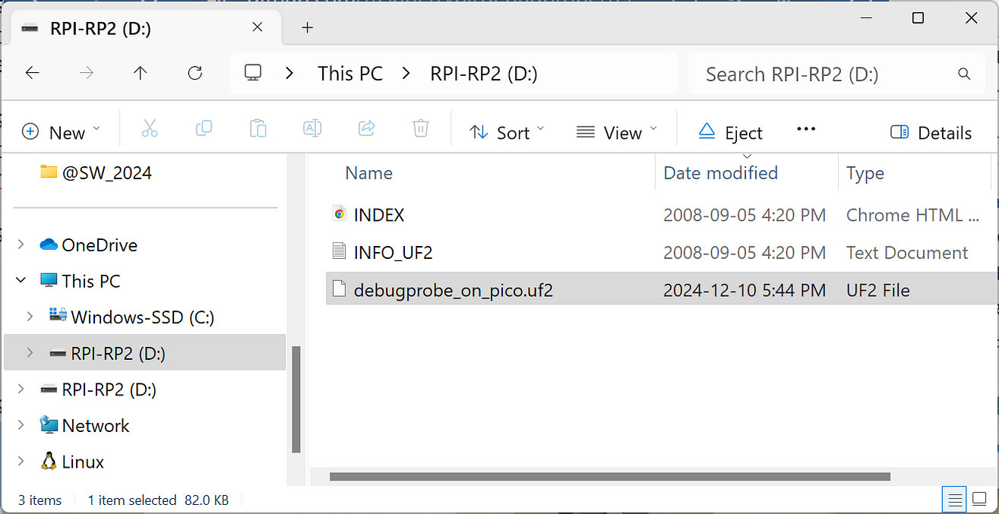
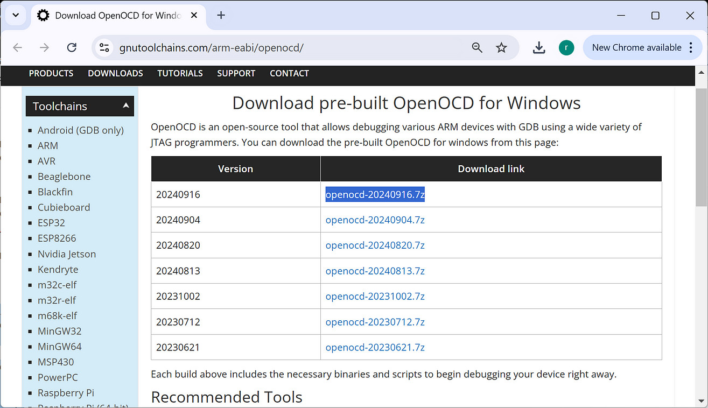

การใช้ Raspberry Pi RP2040 เป็นอุปกรณ์ CMSIS-DAP Debug Probe#
▷ CMSIS-DAP / SWD Debug Probe#
ในการพัฒนาซอฟต์แวร์สำหรับระบบสมองกลฝังตัวที่ใช้ไมโครคอนโทรลเลอร์เป็นตัวประมวลผล (Embedded System Programming) การดีบักเฟิร์มแวร์ ถือเป็นขั้นตอนสำคัญที่ต้องใช้เครื่องมือเฉพาะ เพื่อการอัปโหลดโปรแกรมไปยังหน่วยความจำแฟลช และการตรวจสอบและแก้ไขข้อผิดพลาด
เครื่องมืออย่างหนึ่งที่ได้รับความนิยมคือ CMSIS-DAP Debug Probe สำหรับชิปที่ใช้ซีพียูตระกูล
Arm Cortex-M Series และมักใช้ร่วมกับอินเทอร์เฟซสำหรับการดีบักที่เรียกว่า
SWD (Serial Wire Debug) โดยมีจุดเด่นคือ การใช้งานผ่านขาเพียงสองขา (SWDIO และ SWCLK)
ซึ่งต่างจากโปรโตคอล JTAG ที่ต้องการขาเชื่อมต่อมากกว่า SWD
CMSIS-DAP ย่อมาจาก Cortex Microcontroller Software Interface Standard - Debug Access Port เป็นมาตรฐานที่พัฒนาโดยบริษัท ARM เพื่อช่วยให้การดีบักและโปรแกรมไมโครคอนโทรลเลอร์ที่ใช้ ARM Cortex
อุปกรณ์ CMSIS-DAP Debug Probe สามารถเชื่อมต่อระหว่างคอมพิวเตอร์ (ผ่านพอร์ต USB ของผู้ใช้) กับชิปไมโครคอนโทรลเลอร์ (ผ่านอินเทอร์เฟซ SWD) เพื่อทำหน้าที่ต่อไปนี้
- Flashing Firmware: อัปโหลดไฟล์โปรแกรมลงในหน่วยความจำของไมโครคอนโทรลเลอร์
- On-chip Debugging: ตรวจสอบการทำงานของโปรแกรมในขณะที่ทำงานโดยใช้ชิปไมโครคอนโทรลเลอร์
- System Monitoring: อ่านค่าข้อมูลต่าง ๆ เช่น สถานะของรีจิสเตอร์หรือพอร์ตอินพุตเอาต์พุต
อุปกรณ์ประเภท CMSIS-DAP Debug Probe รองรับการทำงานร่วมกับซอฟต์แวร์ IDE เช่น
- Arm Keil µVision IDE
- VS Code IDE + Cortex-Debug
- OpenOCD
อุปกรณ์ CMSIS-DAP Debug Probe มีขายและให้เลือกใช้จากหลายผู้ผลิต
และแตกต่างกัน เช่น ชิปไมโครคอนโทรลเลอร์ที่เลือกใช้งาน (STM32, RP2040, SAMD21, ESP32S3, ...)
และความเร็วในการประมวลผล หรือ ความเร็วของสัญญาณ SWCLK เป็นต้น
เฟิร์มแวร์สำหรับ CMSIS-DAP Debug Probe ที่เป็น Open Source ก็มีให้เลือกและลองใช้งานได้ ดังนี้
▷ RP2040 SWD Debug Probe#
บริษัท RPi Ltd. มีอุปกรณ์ SWD Debug Probe ที่ใช้ชิป RP2040
เรียกว่า Pico Debug Probe
แต่ผู้ใช้ก็สามารถดาวน์โหลดไฟล์เฟิร์มแวร์ (ชนิดของไฟล์คือ .uf2)
มาใช้กับบอร์ดไมโครคอนโทรลเลอร์ RP2040 เช่น Raspberry Pi Pico และ
RP2350 เช่น Raspberry Pi Pico 2
- UF2 file for Debug Probe:
debugprobe.uf2 - UF2 file for Pico:
debugprobe_on_pico.uf2 - UF2 file for Pico 2:
debugprobe_on_pico2.uf2 - GitHub Repo:
raspberrypi/debugprobe
ขาอุปกรณ์สำหรับการเชื่อมต่อที่สำคัญคือ
- UART:
UART_TX:GPIO4UART_RX:GPOI5
- SWD:
SWCLK:GPIO2SWDIO:GPIO3
ถัดไปเป็นตัวอย่างและขั้นตอนการใช้บอร์ด WaveShare RP2040-Zero เป็นอุปกรณ์ Pico Debug Probe
- ดาวน์โหลดไฟล์
debugprobe_on_pico.uf2(ได้ทดลองใช้เวอร์ชันv2.2.0) - เชื่อมต่อบอร์ด WaveShare RP2040-Zero กับคอมพิวเตอร์ของผู้ใช้ผ่านทางพอร์ต USB
- กดปุ่ม BOOT ค้างไว้ และกดปุ่ม RESET แล้วปล่อย เพื่อทำให้บอร์ดเข้าสู่โหมด RP2 BOOTSEL
จะมองเห็นไดรฟ์ของบอร์ด (USB Mass Storage) เช่น ในไดรฟ์
D:ชื่อRPI-RP2สำหรับ Windows เป็นต้น - นำไฟล์
debugprobe_on_pico.uf2ไปใส่ลงในไดรฟ์ จากนั้นอุปกรณ์จะรีเซตตัวเองและเริ่มทำงาน
รูป: บอร์ด WaveShare RP2040-Zero และตำแหน่งขาของบอร์ด

รูป: ตัวอย่างการนำไฟล์ debugprobe_on_pico.uf2 ไปใส่ลงในไดรฟ์ของบอร์ด
ในกรณีที่ใช้ WSL2 Ubuntu ก็มีตัวอย่างไฟล์ Bash Script (copy_uf2.sh)
สำหรับการนำไฟล์ .uf2 ไปใส่ลงในไดรฟ์ของบอร์ด RP2040 ซึ่งจะเป็นไดรฟ์แบบ Removable Flash Drive
ดังนั้นก่อนทำคำสั่งด้วยสคริปต์นี้ จะต้องทำให้บอร์ด RP2040 อยู่ในโหมด RP2 BOOTSEL ก่อนทุกครั้ง
#!/bin/bash
# Ensure two arguments are provided
if [ "$#" -ne 2 ]; then
echo "Usage: $0 <source-file> <window-drive>"
exit 1
fi
SRC_FILE=$1
PICO_DRV=$2
MOUNT_DIR="/mnt/pico_${PICO_DRV,,}"
PICO_DRV="${PICO_DRV^^}:"
# Check if the source file exists
if [ ! -f "$SRC_FILE" ]; then
echo "Error: Source file '$SRC_FILE' does not exist."
exit 2
fi
if [[ "${SRC_FILE##*.}" != "uf2" ]]; then
echo "Error: Source file '$SRC_FILE' is not a .uf2 file."
exit 2
fi
echo "mount Windows drive $PICO_DRV to '$MOUNT_DIR'"
if [[ "${PICO_DRV}" != "C:" ]]; then
sudo mkdir -p "$MOUNT_DIR" 2>/dev/null
sudo mount -t drvfs "$PICO_DRV" "$MOUNT_DIR" && cp "$SRC_FILE" "$MOUNT_DIR"
sudo umount "$MOUNT_DIR" 2>/dev/null
sudo rm -fr "$MOUNT_DIR" 2>/dev/null
else
echo "Ignore drive C:"
exit 3
fi
echo "Done..."
รูป: ตัวอย่างการทำคำสั่ง copy_uf2.sh
▷ การทดลองใช้งานร่วมกับ OpenOCD#
โปรแกรม OpenOCD สามารถนำมาใช้งานกับระบบปฏิบัติการได้ทั้ง Windows, Linux และ Mac OS แต่ในบทความนี้จะกล่าวถึงเฉพาะ Windows และ Ubuntu / WSL2
ตัวอย่างการทำคำสั่งสำหรับ Ubuntu 22.04 / 24.04 LTS (ไม่ได้ใช้ WSL2)
# Install the openocd software package.
$ sudo apt install openocd
# Detect the Pico Debug Probe.
$ lsusb | grep "Raspberry Pi"
Bus 001 Device 043: ID 2e8a:000c Raspberry Pi Debugprobe on Pico (CMSIS-DAP)
# Use the openocd tool to connect to the Pico Debug Probe.
$ openocd -s tcl -f interface/cmsis-dap.cfg \
-c "transport select swd" -c "adapter speed 4000" -c "init; exit"
Open On-Chip Debugger 0.11.0
Licensed under GNU GPL v2
For bug reports, read http://openocd.org/doc/doxygen/bugs.html
swd
adapter speed: 4000 kHz
Info : Using CMSIS-DAPv2 interface with VID:PID=0x2e8a:0x000c, serial=....
Info : CMSIS-DAP: SWD Supported
Info : CMSIS-DAP: FW Version = 2.0.0
Info : CMSIS-DAP: Interface Initialised (SWD)
Info : SWCLK/TCK = 0 SWDIO/TMS = 0 TDI = 0 TDO = 0 nTRST = 0 nRESET = 0
Info : CMSIS-DAP: Interface ready
Info : clock speed 4000 kHz
Warn : gdb services need one or more targets defined
ข้อสังเกต: หากจะใช้คำสั่ง openocd จาก WSL2 Ubuntu โดยตรง จะต้องมีขั้นตอนเพิ่ม
จึงจะสามารถเรียกใช้คำสั่ง openocd กับอุปกรณ์ USB Device อย่างเช่น CMSIS-DAP Debug Probe
▷ ตัวอย่างการใช้ OpenOCD เพื่ออัปโหลดโปรแกรมไปยังบอร์ด RP2040#
โดยปรกติแล้ว ถ้าเขียนโปรแกรมสำหรับบอร์ดไมโครคอนโทรลเลอร์ RP2040 ก็ใช้วิธีเข้าสู่โหมด
UF2 BOOTSEL แล้วนำไฟล์ .uf2 ไปใส่ลงในไดรฟ์ของบอร์ด ซึ่งก็เป็นวิธีที่ทำได้ง่าย
แต่อีกวิธีหนึ่งคือ การใช้วิธี SWD โดยใช้อุปกรณ์ CMSIS-DAP Debug Probe
ถัดไปเป็นตัวอย่างการทำคำสั่งภายใน WSL2 Ubuntu แต่จะเรียกใช้โปรแกรม OpenOCD ที่ใช้กับ Windows 10 / 11 ดังนั้นจึงต้องมีการติดตั้งโปรแกรม OpenOCD สำหรับระบบปฏิบัติการ Windows ให้พร้อมก่อนใช้งาน

รูป: เว็บไซต์สำหรับดาวน์โหลดโปรแกรม OpenOCD for Windows
ในตัวอย่างนี้ได้ติดตั้งโปรแกรมที่ได้ดาวน์โหลดไฟล์ .7z และมาแตกไฟล์ไว้ในไดเรกทอรี ตามตัวอย่างดังนี้
c/Tools/OpenOCD-20240916-0.12.0/
และมองเห็นได้จาก WSL2 Ubuntu โดยใช้ชื่อไดเรกทอรี
/mnt/c/Tools/OpenOCD-20240916-0.12.0/
จากนั้นลองทำคำสั่งใน WSL2 Ubuntu Terminal ตามตัวอย่างดังนี้
$ cat /etc/os-release | head -1
PRETTY_NAME="Ubuntu 24.04.1 LTS"
# Create an alias (short command) for the openocd.exe program.
$ alias openocd.exe='/mnt/c/Tools/OpenOCD-20240916-0.12.0/bin/openocd.exe'
# Check the version of the openocd program.
$ openocd.exe --version
Open On-Chip Debugger 0.12.0 (2024-09-16)
$ openocd.exe \
-f interface/cmsis-dap.cfg -c "transport select swd" \
-f target/rp2040.cfg -c "adapter speed 2000" \
-c "targets rp2040.core0" -c "init; dap info; exit"
ถัดไปเป็นตัวอย่างการทำคำสั่ง openocd.exe เพื่ออัปโหลดไฟล์ led_blink.elf
ที่ได้จากการคอมไพล์โค้ดด้วย Pico C/C++ SDK (ดูตัวอย่างการติดตั้งและใช้งานซอฟต์แวร์)
และอัปโหลดไฟล์ดังกล่าวไปยังบอร์ด RP2040
$ openocd.exe \
-f interface/cmsis-dap.cfg -c "transport select swd" \
-f target/rp2040.cfg -c "adapter speed 2000" \
-c "targets rp2040.core0" \
-c 'program ./led_blink.elf verify reset exit'
รูป: ตัวอย่างการใช้บอร์ด Waveshare RP2040-Zero เป็นอุปกรณ์ Debug Probe
และนำไปใช้กับอีกบอร์ด RP2040 อีกบอร์ดหนึ่ง (เรียกว่า Target Board)
โดยเชื่อมต่อด้วยอินเทอร์เฟส SWD (SWCLK, SWDIO, GND)
รูป: ตัวอย่างการทำคำสั่ง openocd.exe
รูป: ตัวอย่างการทำคำสั่ง openocd.exe เพื่ออัปโหลดไฟล์ .elf ไปยังบอร์ด RP2040
▷ ตัวอย่างการใช้งานสำหรับบอร์ด nRF52840#
ถัดไปเป็นตัวอย่างการใช้อุปกรณ์ SWD Debug Probe ร่วมกับ OpenOCD เพื่อเขียนไฟล์ Adafruit nRF52 Bootloader ไปยังชิป nRF52840 SoC เช่น บอร์ด MakerDiary nRF58240 MDK USB Dongle
ไฟล์ที่ได้ทดลองใช้: mdk_nrf52840_dongle_bootloader-0.9.2_s140_6.1.1.hex
คำสั่งต่อไปนี้เป็นตัวอย่างการใช้โปรแกรม OpenOCD ลบหน่วยความจำแฟลชภายในชิป nRF52840
แล้วจึงเขียนไฟล์ .hex (ใช้ชื่อไฟล์ bootloader.hex) ลงในชิปดังกล่าว
$ alias openocd.exe='/mnt/c/Tools/OpenOCD-20240916-0.12.0/bin/openocd.exe'
$ openocd.exe \
-s tcl -f interface/cmsis-dap.cfg -f target/nrf52.cfg \
-c "transport select swd" -c "adapter speed 4000" \
-c "init; targets; reset init; nrf5 mass_erase; halt" \
-c "program bootloader.hex verify reset exit"
รูป: บอร์ด MakerDiary nRF58240 MDK USB Dongle
รูป: ตัวอย่างการใช้บอร์ด Waveshare RP2040-Zero เป็นอุปกรณ์ Debug Probe ร่วมกับบอร์ด MakerDiary nRF58240 MDK USB Dongle เชื่อมต่อกันด้วย SWD Interface
รูป: ตัวอย่างการทำคำสั่ง openocd.exe
เมื่อบอร์ด nRF58240 MDK USB Dongle
ได้มีการติดตั้ง Adafruit nRF52 Bootloader แล้ว และเมื่อกดปุ่ม RESET แบบ Double-Click จะเข้าสู่โหมด UF2 BOOT
และมองเห็นไฟล์ INFO_UF2.TXT อยู่ภายใน
รูป: ตัวอย่างเนื้อหาภายในไฟล์ INFO_UF2.TXT
▷ กล่าวสรุป#
บทความนี้นำเสนอตัวอย่างการใช้บอร์ดไมโครคอนโทรลเลอร์ RP2040 ให้เป็นอุปกรณ์ CMSIS-DAP / SWD Debug Probe โดยเลือกใช้บอร์ด WaveShare RP2040-Zero ซึ่งมีขนาดเล็กและราคาไม่แพง มีการสาธิตการใช้งานอุปกรณ์ร่วมกับโปรแกรม OpenOCD ที่เป็น Open Source โดยสาธิตเฉพาะการทดลองเขียนไฟล์ (Flashing) ไปยังบอร์ดไมโครคอนโทรลเลอร์อย่างเช่น RP2040 และ nRF52840
This work is licensed under a Creative Commons Attribution-ShareAlike 4.0 International License.
Created: 2024-12-10 | Last Updated: 2024-12-10